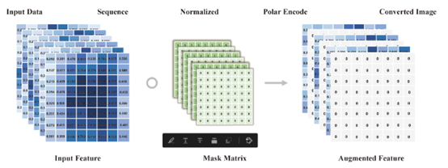
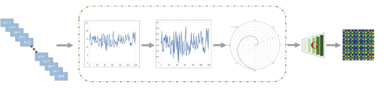
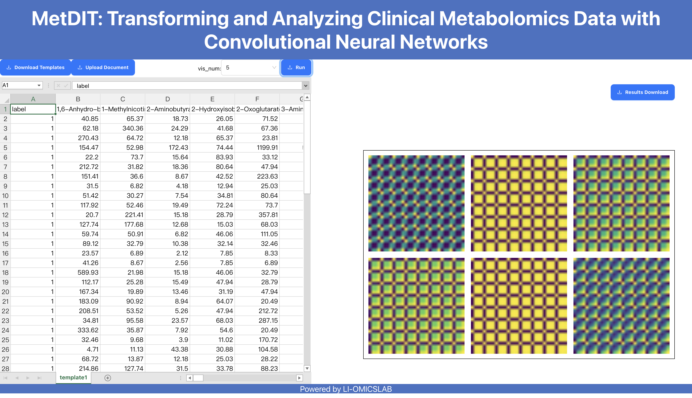

MetDIT: 一种人工智能技术的临床组学数据分析方案
Yuyang Sha (沙宇洋)




临床组学数据的精准分析在疾病诊断、药物发现等领域中具有非常重要的意义。 通常，临床组学数据具有纬度高、样本量小、特征关联性复杂等特点，传统的数据数据分析方法很能全面的对临床组学数据进行高效的分析和理解。 因此，本工作提出了一种基于人工智能的临床组学数据分析方案（MetDIT），借助卷积神经网络来对数据进行高效的分析。 MetDIT主要包含两个部分，分别是TransOmics和NetOmics；其中，TransOmics负责将一维的组学数据转换为二维的图像数据， 在转换过程中会保持序列与图像之间的一一对应关系；NetOmics通过构建高效神深度神经网络来对转换后的二维数据进行分析。 为了克服组学数据中样本量小、类别不平衡等难题，我们还设计了一种特征增强模块（FAM）和损失函数，从而进一步提升算法的性能。 为了探究方法的性能，我们选择了三个具有代表性的临床组学数据进行分析，结果显示本文所提出的方案在精度、稳定性、运行效率等方面具有极大的优势。